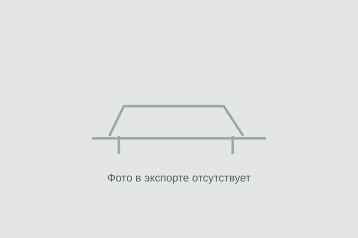

ОБЪЯВЛЕНИЕ АГЕНТСТВА
Volkswagen Golf R
Volkswagen Golf R — 2022 год, 48 000 км. Цена и наличие требуют подтверждения.

2 305 000 ₽
Цена из объявления на 12.03.2026. Цена и состав расходов указаны в публикации продавца. Актуальность и наличие требуют подтверждения.
- Кузов
- Хэтчбек
- Год
- 2022 год
- Пробег
- 48 000 км
- Двигатель
- Уточняйте по объявлению
- Статус
- Наличие уточняйте
Данные перенесены из публикации агентства. Характеристики, состояние и историю необходимо проверить перед покупкой.
Данные и фотографии из публикаций агентства. Дата публикации: 12.03.2026. Старые объявления не подтверждают наличие сегодня.
Позвонить Дмитрию ↗Канал агентства ↗Открыть интерактивную карточку ↗